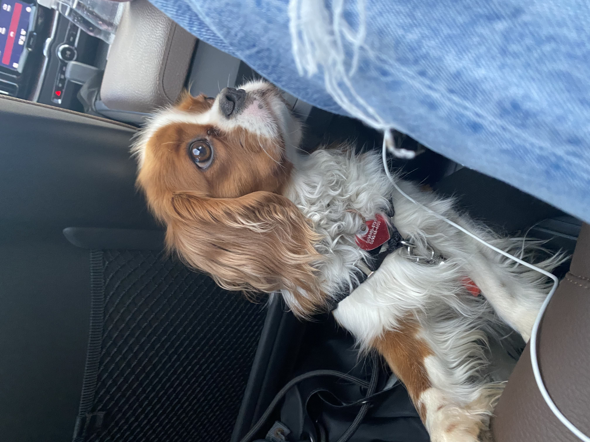

<div class="textcontainer">
<h3>About Me</h3>
<p class="margin"> </p>
<div class="center-row">
<img src="./about-me- pic.JPG" alt="about me image" width="300">
<p id="aboutme">
My name is Isabella Mariutti Grotti. I am a Brazilian high schooler, currently a rising senior. In the future, I want to work as an engineer, largely due to my passion for building, designing, and fixing things. I have always loved all types of puzzles and finding a solution to them. I am excited to learn new skills and be part of this class.
</p>
</div>
<br></br>
My favorite hobbies include baking and my Rubik's Cube collection. In my final product, I hope to include something related to that so that the project becomes more personal.
<br></br>

<br></br>
This is my dog Bacio.
<br></br>
</div>